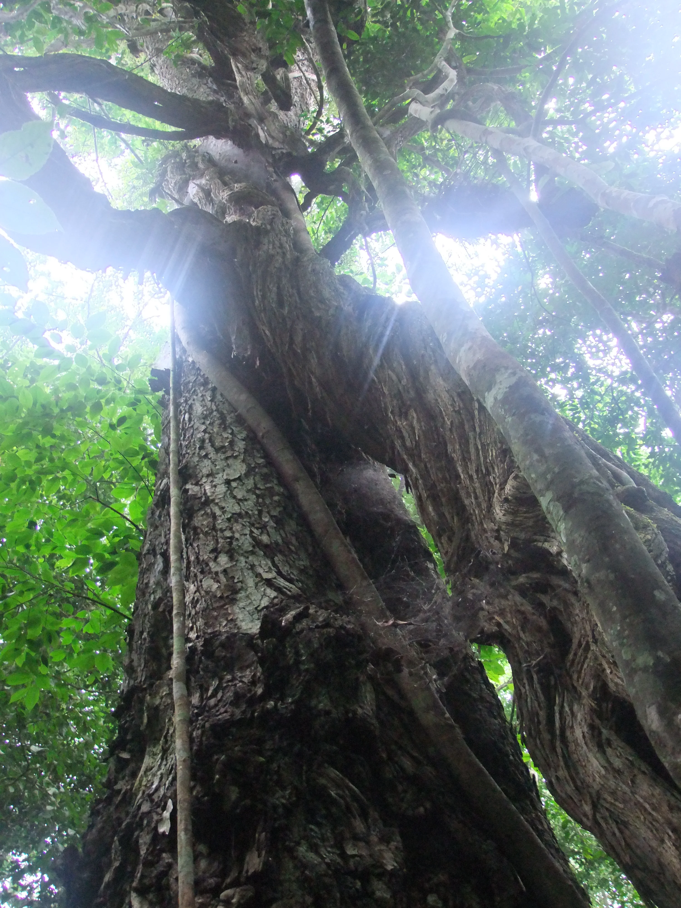

Budongo has the gravity of an old forest. The canopy rises high, the light arrives filtered and cool, and the paths move through air that feels heavy with leaf, bark, and age. It is the sort of place that makes people lower their voices without needing to be asked.
Part of Budongo's appeal lies in its giant mahogany trees. They give the reserve a vertical grandeur, making the forest feel built rather than grown. When you add chimpanzees, birds, and the layered quiet of a mature woodland, the result is one of Uganda's most atmospheric nature experiences.
Unlike more dramatic headline destinations, Budongo persuades gradually. It asks for attention rather than excitement, and that is exactly why it lingers in memory.
A Forest Of Texture
Budongo rewards close looking. The sheen of leaves, the soft rot of the forest floor, the calls shifting between near and far, and the enormous trunks rising through semi-darkness all make the walk feel immersive even before wildlife enters the frame.
For travelers who enjoy forests as living spaces rather than mere settings, this reserve offers exceptional depth.
Chimpanzees Add Electricity
When chimpanzees are nearby, the calm of Budongo changes quickly. The forest fills with movement and sound, and suddenly the great still canopy becomes the stage for something social, intelligent, and fast. That contrast between quiet and eruption gives chimp tracking here real force.
Yet even without a perfect sighting, Budongo feels worthwhile because the forest itself is such a strong presence.
Why It Fits So Well With Murchison
Budongo is one of the smartest additions to a northern Uganda route because it shifts the emotional tone. After open safari country and the drama of the Nile, the reserve offers shade, intimacy, and a different way of paying attention. It balances the trip beautifully.
For readers wanting a route with more than plains and big mammals, Budongo is one of the best forest detours Uganda can offer.